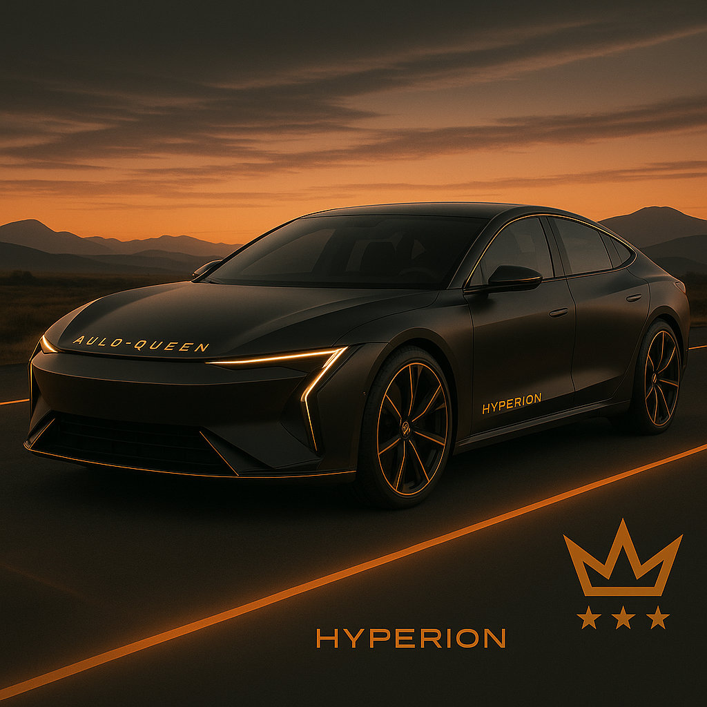

Aulo-Queen Hyperion Modèle G
Performance
- Vitesse maximale : 330 km/h
- 0-100 km/h : 3.5 secondes
- Autonomie combinée : 800 km
- Motorisation : Hybride V6 biturbo + moteur électrique
Matériaux & Confort
Châssis en aluminium léger, intérieur cuir microperforé, toit panoramique intelligent.
Design
Ligne GT luxueuse, jantes aérodynamiques, éclairage LED 360°.
Technologie embarquée
Système audio 3D immersif, IA embarquée, écran central rotatif, compatibilité maison connectée.